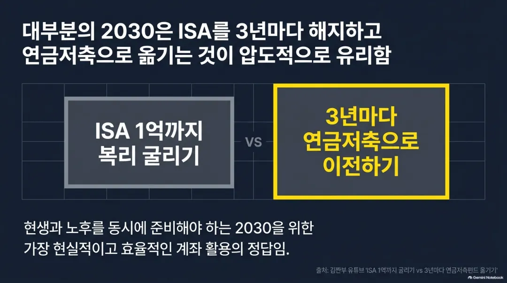
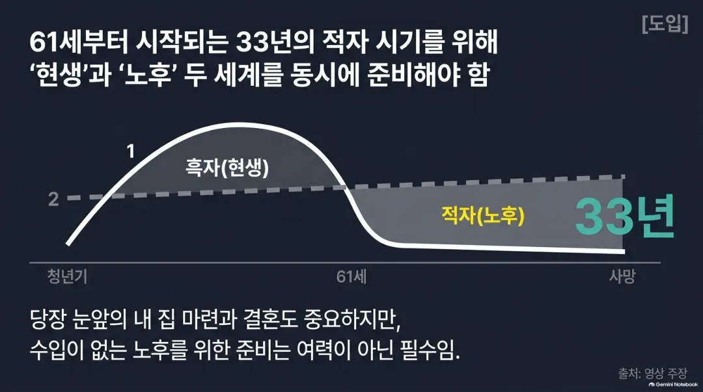
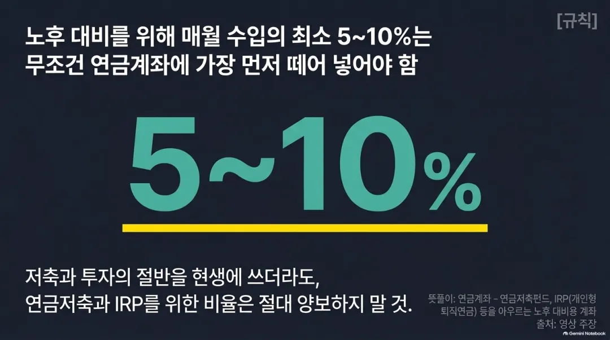
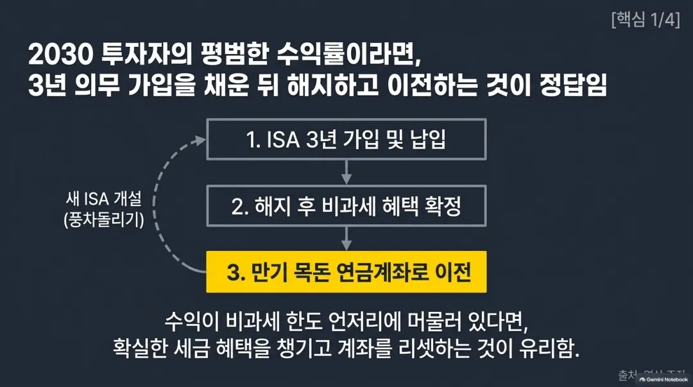
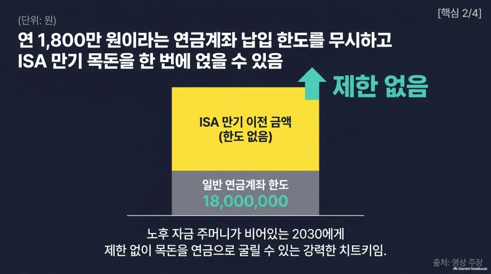
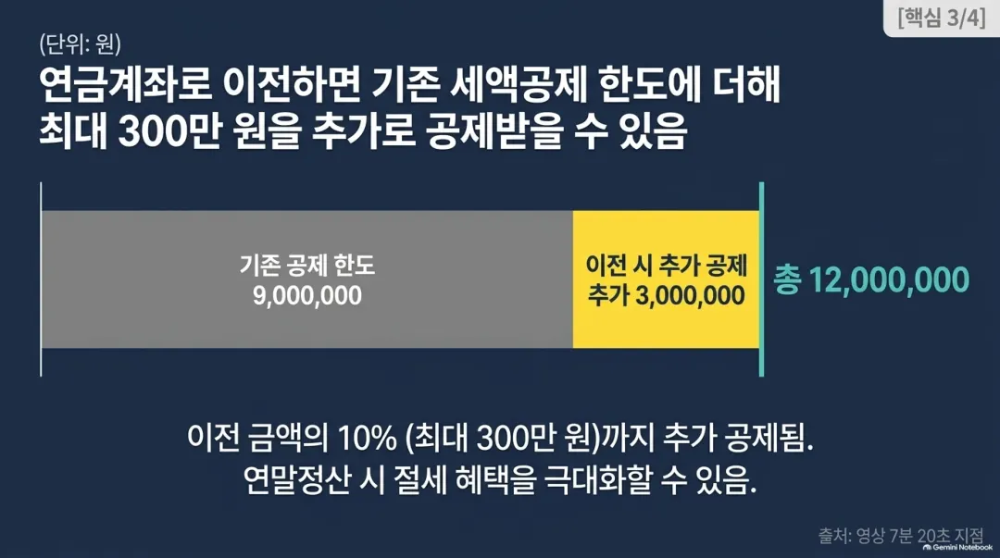
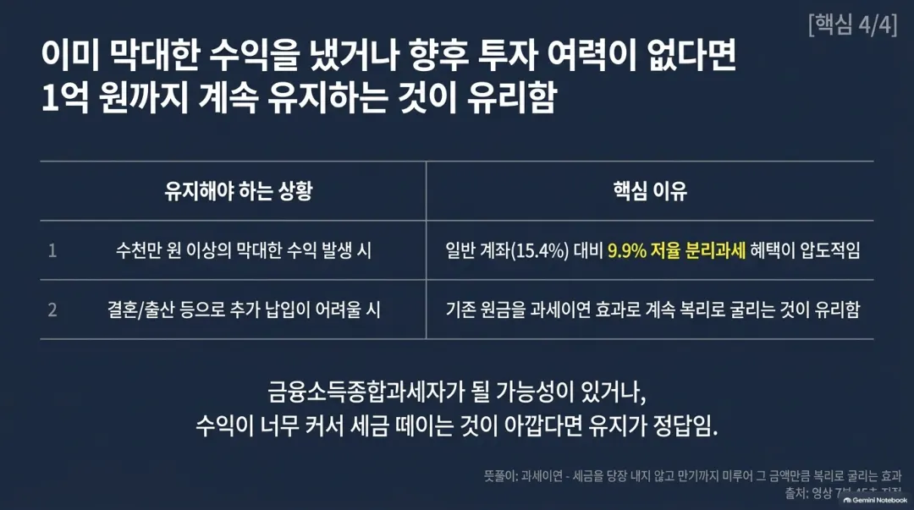
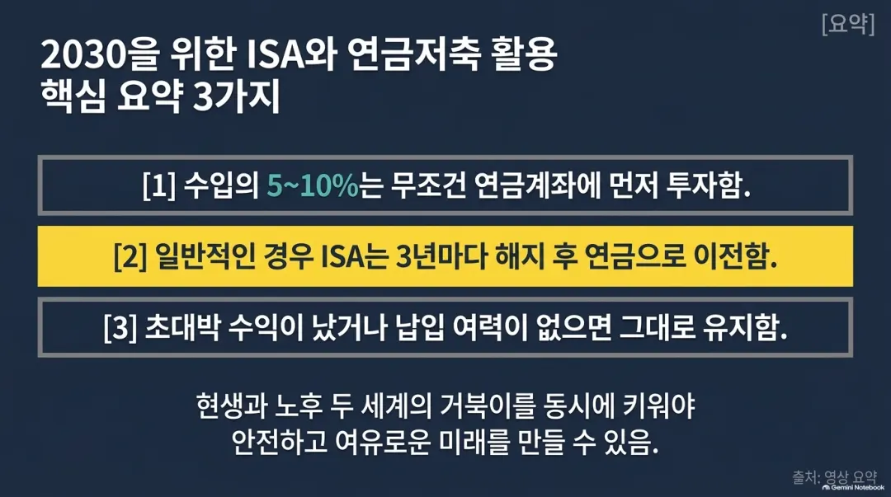

9월 17일 17:32
수입이 지출보다 많은 흑자 시기는 계속되지 않음. 보통 61세부터는 지출이 수입보다 많은 적자 시기로 바뀌는데, 그 전 33년 동안 미리 돈을 모아 둬야 함. 한 살이라도 젊을 때 시작할수록 유리함.
결혼, 독립, 내 집 마련처럼 눈앞에 닥친 현생 자금과, 멀게 느껴지는 노후 자금은 순서를 정하는 게 아니라 동시에 준비하는 것. 많은 사람이 현생 자금을 우선하지만, 두 가지 모두 33년 안에 준비해야 하는 돈이기 때문.
한 달에 저축 가능한 돈이 50만원뿐이어도 그중 3만원이나 5만원은 반드시 연금저축 계좌에 넣어야 한다는 것. 저축 가능 금액이 적다는 이유로 노후 대비를 완전히 미루면 안 된다는 뜻.
저축 및 투자에 수입의 최소 절반을 넣고, 그중 5에서 10%는 따로 연금 계좌에 넣으라는 것. 둘 중 하나를 먼저 하고 나중에 하는 게 아니라 같은 시기에 함께 진행해야 함.
ISA는 연 2천만원, 총 1억원까지 넣을 수 있고, 수익에 대해 세금을 나중에 매기는 과세이연 방식임. 3년 의무 가입 기간이 지나면 해지해서 일정 금액까지는 세금을 아예 안 내고, 나머지 수익은 9.9%라는 낮은 세율로만 세금을 냄.
ISA 수익이 200만원에서 400만원 정도로 비과세 한도와 비슷한 수준이라면, 한번 해지해서 세금 혜택을 확실히 챙기고 새로 시작하는 게 낫다는 것. 이렇게 하면 손해 볼 일 없이 확정된 혜택을 얻고, 다시 새 ISA를 만들어 비과세 한도를 리셋할 수 있음.
연금저축펀드나 IRP는 1년에 1,800만원까지만 넣을 수 있지만, ISA에서 만기된 목돈은 그 한도와 상관없이 통째로 옮겨 넣을 수 있음. 노후 자금이 부족한 사람에게는 큰 장점이라는 설명.
원래 연금저축과 IRP를 합쳐 900만원까지만 세액공제를 받을 수 있는데, ISA 만기 자금을 연금 계좌로 옮기면 300만원이 추가되어 최대 1,200만원까지 공제 혜택을 받을 수 있음. 소득이 높아 다른 공제 항목이 부족한 사람에게 유리함.
매년 1천만원에서 2천만원씩 ISA에 넣을 수 있는 사람이 1억원 한도를 다 채우면 더 이상 추가로 넣을 수 없게 됨. 이런 경우 한번 정리해서 새로운 1억원 한도를 만들어 계속 투자하는 게 낫다는 설명.
금융소득종합과세자가 되면 ISA를 새로 만들 수 없음. 지금은 아니어도 투자 성과가 좋아 곧 종합과세자가 될 것 같다면, 지금 있는 ISA를 미리 정리하고 새로 만들어 두는 게 좋다는 조언.
ISA 원금이 1억원이고 이미 수억원의 수익이 나고 있다면, 다른 계좌에서는 15.4%를 떼는 세금을 ISA 안에서는 9.9%로 계속 낮게 유지할 수 있어 정리하지 않는 게 유리함. 앞으로 결혼, 출산 등으로 추가 투자가 어려워질 사람도 연장하는 것이 나을 수 있음.








두 명의 재테크 콘텐츠 제작자가 협업해 진행하는 시리즈물로 보임. 영상 안에서 댓글 이벤트(커피 쿠폰 추첨)로 참여를 유도하고, 다음 편 예고로 시청 지속을 유도하는 구조임. 직접적인 상품 판매나 유료 강의 홍보는 이 영상 안에는 등장하지 않음. 채널 구독과 시리즈 조회수 확보가 주된 목적으로 추정됨.